Läsårstider för din kommun
Alla skollov för din kommun i en kalender: höstlov, jullov, sportlov och påsklov för varje barn – med nedräkning, widget och familjens kalender.
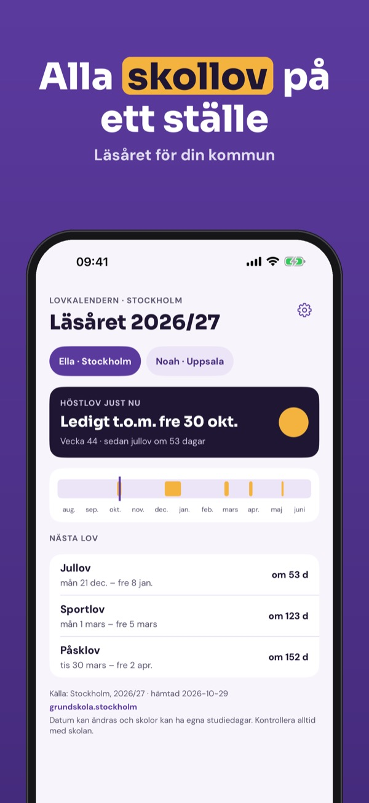
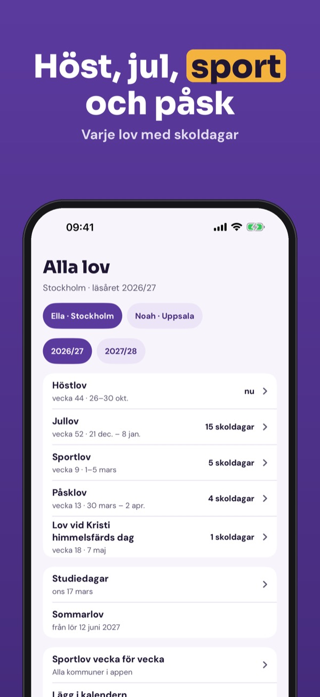
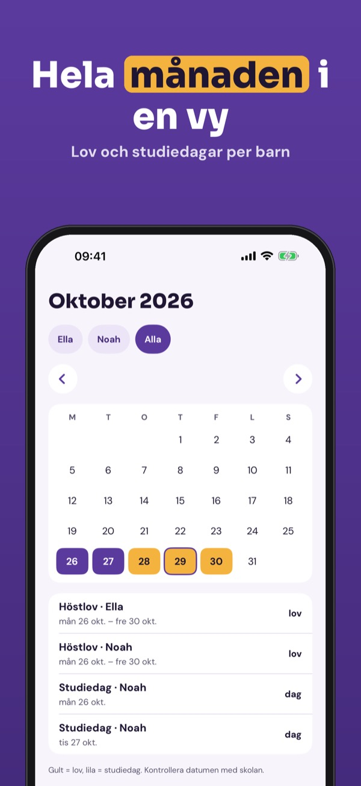
Lovkalendern samlar läsårstiderna för din kommun, så att du ser när barnen är lediga – och kan planera med mormor, fritids och jobbet.
En kommun, alla lov i läsåret och nedräkningen kan användas utan köp. Fullversionen är ett engångsköp som låser upp flera barn och kommuner, kalender, widget, påminnelser och jämförelse. Ingen prenumeration.
Datumen kommer från kommunernas publicerade läsårstider och kan ändras. Kontrollera alltid med skolan. Lovkalendern är inte kopplad till någon kommun eller skola.
Terms of Use (EULA): https://www.apple.com/legal/internet-services/itunes/dev/stdeula/
Privacy: https://baytechbv.github.io/privacy/ferietid-nordic/
Skoleruta for din kommune
Alle skoleferier for kommunen din i én kalender: høstferie, juleferie, vinterferie og påskeferie for hvert barn – med nedtelling, widget og familiens kalender.
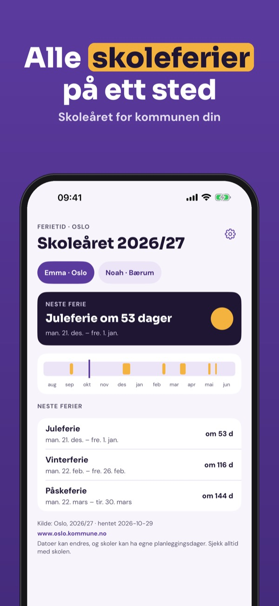
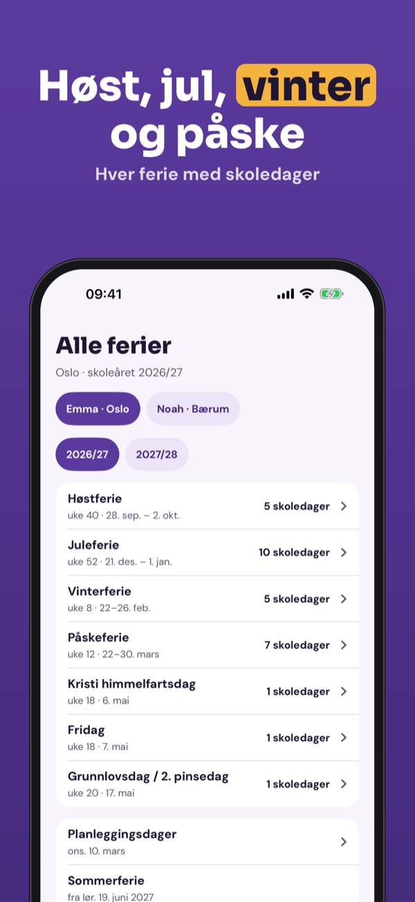
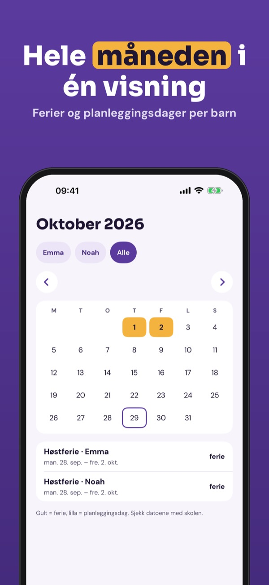
Ferietid samler skoleruta for kommunen din, så du ser når barna har fri – og kan planlegge med besteforeldre, SFO og jobben.
Én kommune, alle ferier i skoleåret og nedtellingen kan brukes uten kjøp. Fullversjonen er et engangskjøp som låser opp flere barn og kommuner, kalender, widget, påminnelser og sammenligning. Ingen abonnement.
Datoene kommer fra kommunenes publiserte skoleruter og kan endres. Sjekk alltid med skolen. Ferietid er ikke knyttet til noen kommune eller skole.
Terms of Use (EULA): https://www.apple.com/legal/internet-services/itunes/dev/stdeula/
Privacy: https://baytechbv.github.io/privacy/ferietid-nordic/
Ferieplan for din kommune
Alle skoleferier for din kommune i én kalender: efterårsferie, juleferie, vinterferie og påskeferie for hvert barn – med nedtælling, widget og kalender.
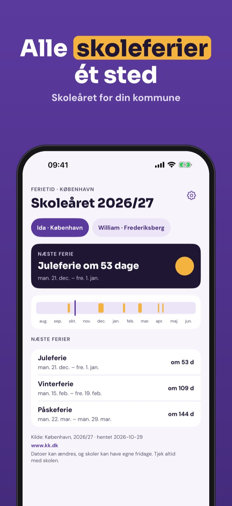
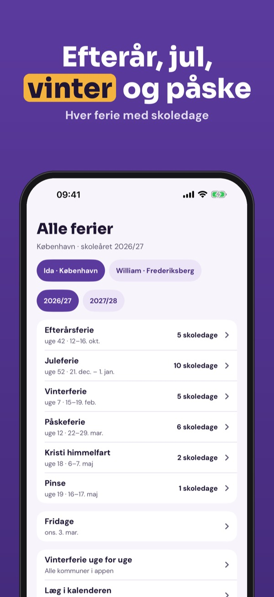
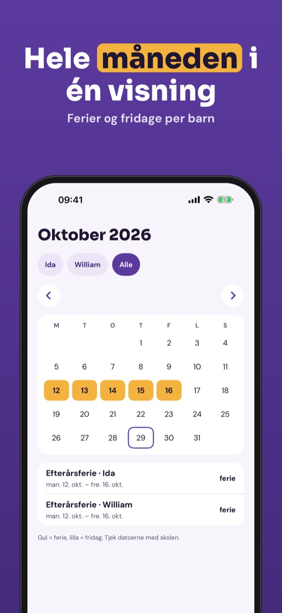
Ferietid samler skoleferierne for din kommune, så du kan se, hvornår børnene har fri – og planlægge med bedsteforældre, SFO og arbejdet.
Én kommune, alle ferier i skoleåret og nedtællingen kan bruges uden køb. Fuld version er et engangskøb, der låser flere børn og kommuner, kalender, widget, påmindelser og sammenligning op. Intet abonnement.
Datoerne kommer fra kommunernes offentliggjorte ferieplaner og kan ændres. Tjek altid med skolen. Ferietid er ikke tilknyttet nogen kommune eller skole.
Terms of Use (EULA): https://www.apple.com/legal/internet-services/itunes/dev/stdeula/
Privacy: https://baytechbv.github.io/privacy/ferietid-nordic/
Lukuvuoden lomat kunnittain
Kuntasi koulujen lomat yhdessä kalenterissa: syysloma, joululoma, hiihtoloma ja kesäloma jokaiselle lapselle – lähtölaskenta, widget ja perheen kalenteri.
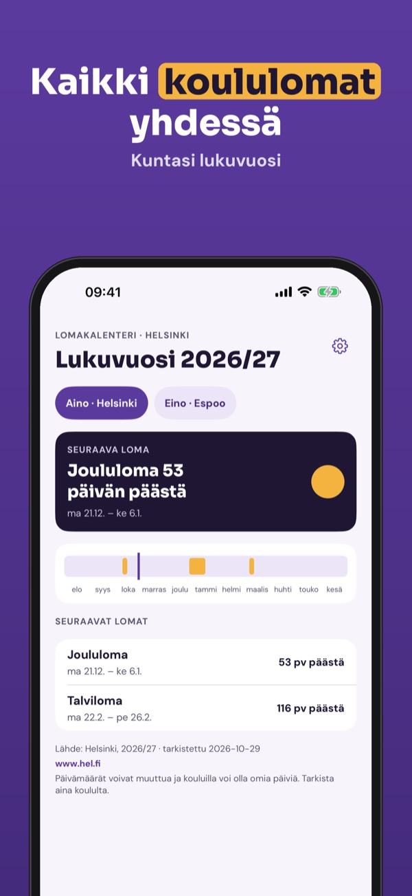
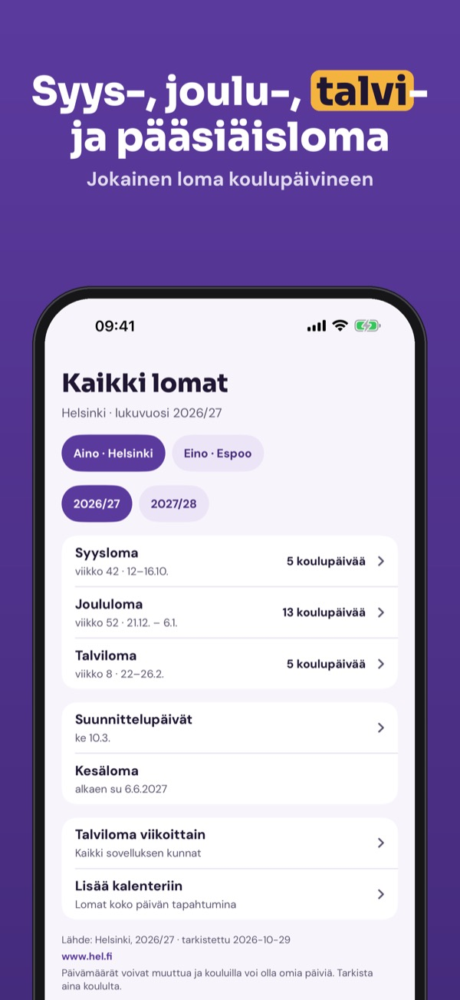
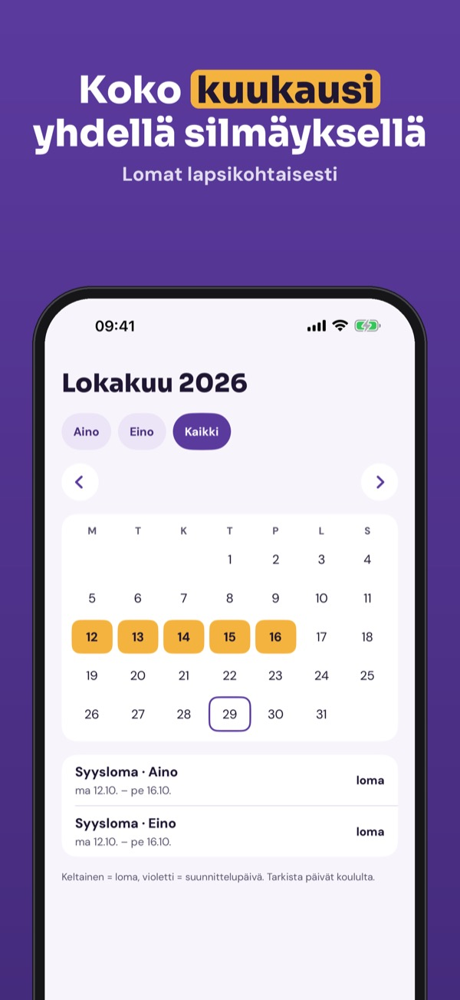
Lomakalenteri kokoaa kuntasi koulujen loma-ajat, joten näet, milloin lapset ovat vapaalla – ja voit suunnitella isovanhempien ja töiden kanssa.
Yksi kunta, lukuvuoden lomat ja lähtölaskenta ovat käytössä ilman ostoa. Täysi versio on kertaosto, joka avaa useamman lapsen ja kunnan, kalenterin, widgetin, muistutukset ja vertailun. Ei tilausta.
Päivämäärät perustuvat kuntien julkaisemiin työ- ja loma-aikoihin ja voivat muuttua. Tarkista aina koululta. Lomakalenteri ei liity mihinkään kuntaan tai kouluun.
Terms of Use (EULA): https://www.apple.com/legal/internet-services/itunes/dev/stdeula/
Privacy: https://baytechbv.github.io/privacy/ferietid-nordic/
Vakanties per regio en school
Alle schoolvakanties voor jouw regio in één kalender: herfst-, kerst-, voorjaars-, mei- en zomervakantie per kind – met aftellen, widget en je agenda.
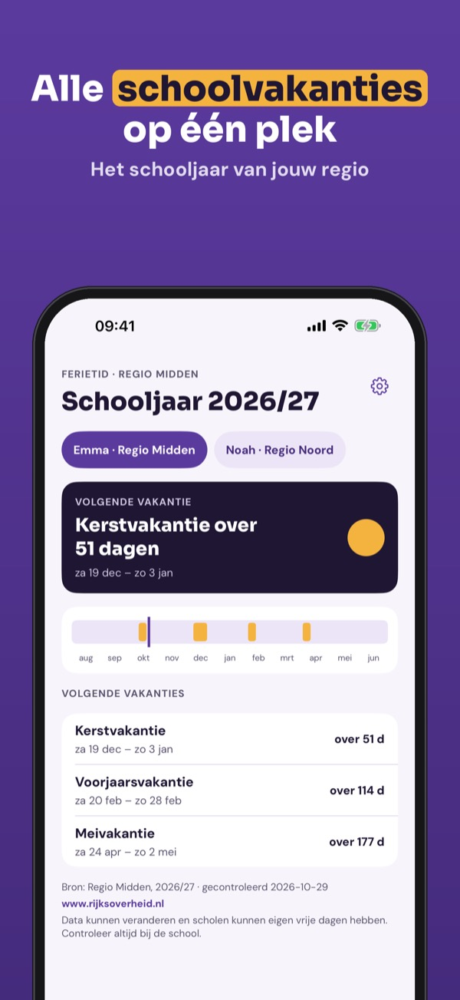
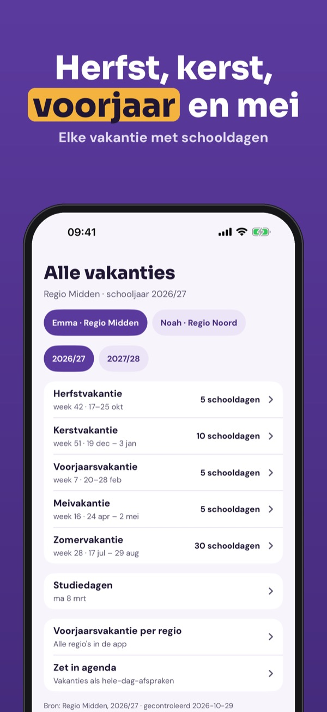
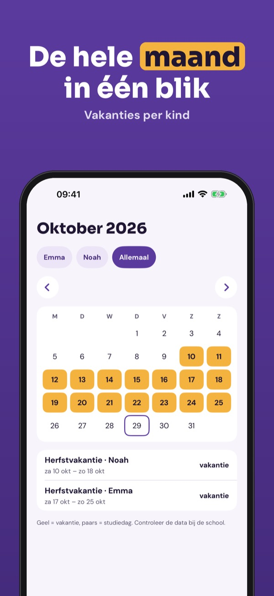
Ferietid zet de schoolvakanties van jouw regio en school op een rij, zodat je ziet wanneer de kinderen vrij zijn – en kunt plannen met opa en oma, opvang en werk.
Eén regio, alle vakanties van het schooljaar en het aftellen gebruik je zonder aankoop. De volledige versie is een eenmalige aankoop voor meerdere kinderen en regio’s, agenda, widget, herinneringen en vergelijken. Geen abonnement.
De data komen uit de gepubliceerde schoolvakanties en kunnen veranderen. Controleer altijd bij de school. Ferietid is niet verbonden aan een overheid of school.
Terms of Use (EULA): https://www.apple.com/legal/internet-services/itunes/dev/stdeula/
Privacy: https://baytechbv.github.io/privacy/ferietid-nordic/
Ferien je Bundesland
Alle Schulferien deines Bundeslandes in einem Kalender: Herbst-, Weihnachts-, Oster- und Sommerferien für jedes Kind – mit Countdown, Widget und Kalender.
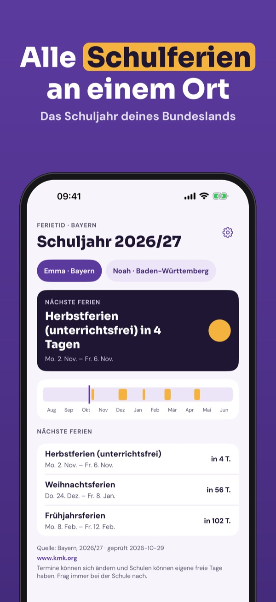
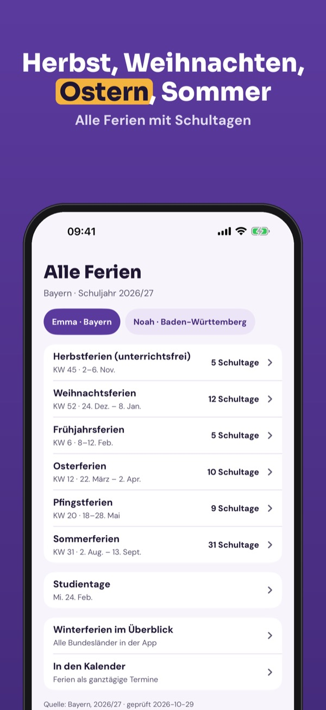
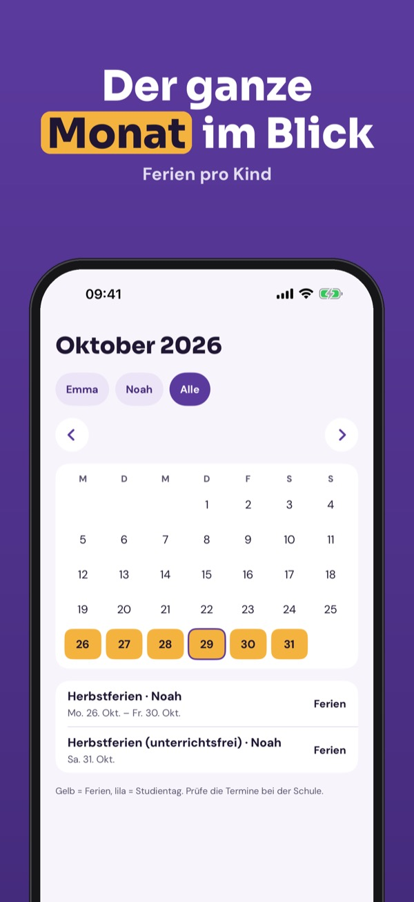
Ferietid sammelt die Schulferien für dein Bundesland und deine Schule, damit du siehst, wann die Kinder frei haben – und mit Großeltern, Betreuung und Job planen kannst.
Ein Bundesland, alle Ferien des Schuljahres und der Countdown sind ohne Kauf nutzbar. Die Vollversion ist ein Einmalkauf für mehrere Kinder und Regionen, Kalender, Widget, Erinnerungen und Vergleich. Kein Abo.
Die Daten stammen aus den veröffentlichten Ferienterminen und können sich ändern. Prüfe sie immer bei der Schule. Ferietid gehört zu keiner Behörde und keiner Schule.
Terms of Use (EULA): https://www.apple.com/legal/internet-services/itunes/dev/stdeula/
Privacy: https://baytechbv.github.io/privacy/ferietid-nordic/